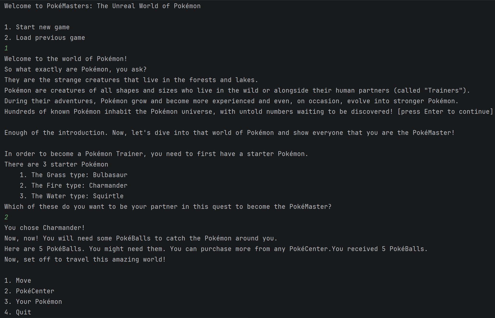
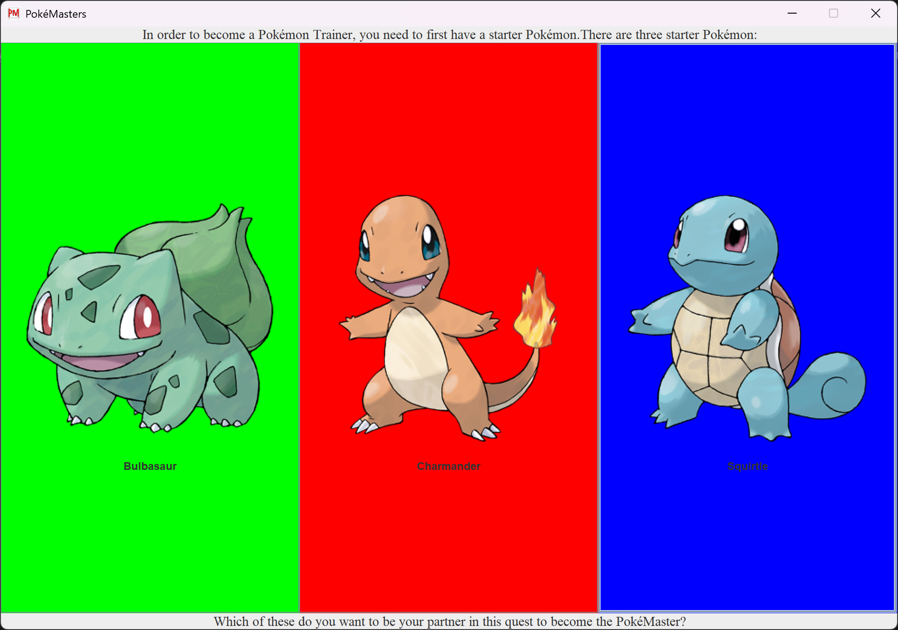

PokeMasters is a single-player Role-Playing Game where you explore the Pokemon universe,
catch and train Pokemon, battle wild creatures, and work toward becoming a PokeMaster.
Originally created as a physical notebook-based multiplayer game during my grade 9 boarding
school days (when electronics were prohibited), this project represents the digitization of
that cherished childhood creation.
The game features turn-based combat, a progression system where Pokemon gain experience and
level up, resource management with PokeDollars, and a full save/load system. Built using
Java with a clean Model-View-Controller architecture, it demonstrates core object-oriented
design principles including encapsulation, inheritance, polymorphism, and design patterns
like Singleton.
Development Phases
Phase 0
Project Planning
Defined the project concept and documented user stories. Selected PokeMasters as my term
project - a digital conversion of a physical notebook-based Pokemon game I created in
grade 9 during boarding school when electronics were prohibited.
Battle wild Pokemon with attack, switch, bag, and escape options
Catch Pokemon using PokeBalls (higher catch rate when HP < 20%)
Earn PokeDollars, level up, and learn new attacks
Heal Pokemon and buy items at PokeCenter
Phase 1
Domain Model & Console UI
Implemented the core domain model with clean separation between model and UI packages.
Built a working console-based application with all user stories executable.
Model Classes
Player - Inventory, PokeDollars, Pokemon collection management
Pokemon - Base class with HP, level, experience, attacks, stats
Starter Classes - Squirtle, Charmander, Bulbasaur with unique stats
Attack - Attack objects with damage and effects
Design principle: No System.out.println in model code - clean separation of concerns.

Console-based game interface
Phase 2
Data Persistence
Implemented JSON-based save/load system for persistent game state across sessions.
Features
Save Game State - Serialize player data, Pokemon, inventory to JSON
Load Game State - Restore previous session from file
Data Saved - PokeDollars, all Pokemon stats, PokeBall count, progress
Error Handling - Graceful handling of missing/corrupted save files
Phase 3
Graphical User Interface
Replaced console UI with a full Java Swing graphical interface featuring Pokemon sprites.
GUI Screens
Main Menu - Load Game, New Game, Quit buttons
Starter Selection - Visual Pokemon selection with sprites
Battle Screen - Pokemon sprites, HP bars, action buttons
PokeCenter - Heal and Shop interfaces
Statistics Panel - Detailed Pokemon information display

Java Swing graphical interface
Phase 4
Event Logging & Design Reflection
Implemented event logging system and conducted design analysis for future improvements.
Event Logging
Singleton pattern for EventLog - logs player creation, Pokemon catches, battles
All events logged from model package only (clean architecture)
Console output on quit displays full session history
Design Reflection
Identified improvements: consolidate Pokemon classes to data-driven design,
use HashSets for flexible database storage, and decompose GameGraphics for
better single-responsibility adherence.
Object-Oriented Design
MVC Architecture - Clean separation of Model (domain logic),
View (UI components), and Controller (user input handling).
Inheritance & Polymorphism - Base Pokemon class with specialized
starter and wild Pokemon subclasses sharing common behaviors.
Encapsulation - Private fields with public methods for controlled
access to player inventory, Pokemon stats, and game state.
Singleton Pattern - EventLog maintains single instance for
centralized event tracking across all game components.
Package Organization - Separate packages for model, ui, and
persistence with clear dependency boundaries.
Testing & Quality
JUnit Testing - All model classes have corresponding test classes
validating Pokemon stats, battle mechanics, and player actions.
JSON Persistence Tests - Verified save/load integrity by comparing
serialized and deserialized game states.
Event Logging - Complete audit trail for debugging and validating
game flow during development.
Checkstyle Compliance - Enforced code quality standards throughout
the codebase.
View the Code
Explore the full source code, including domain model, GUI implementation, and test suites.